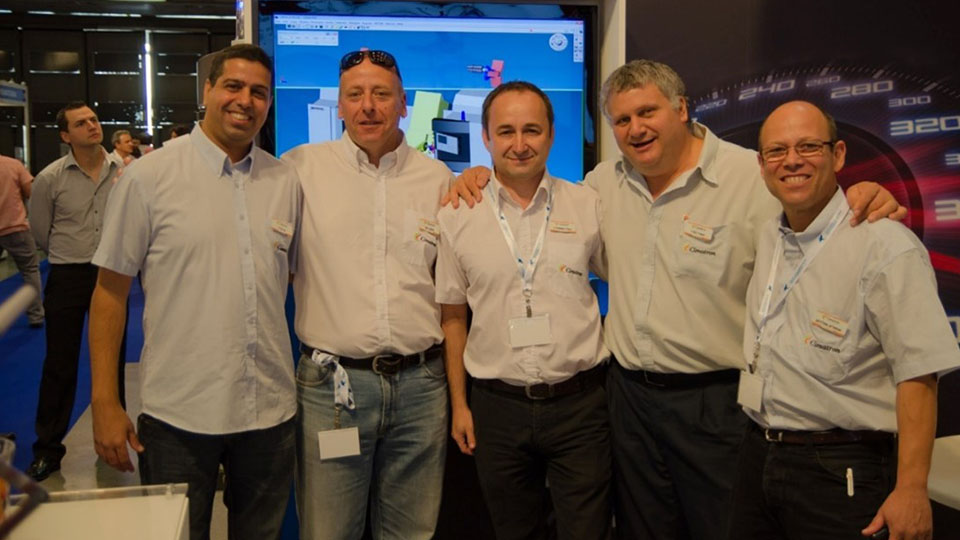
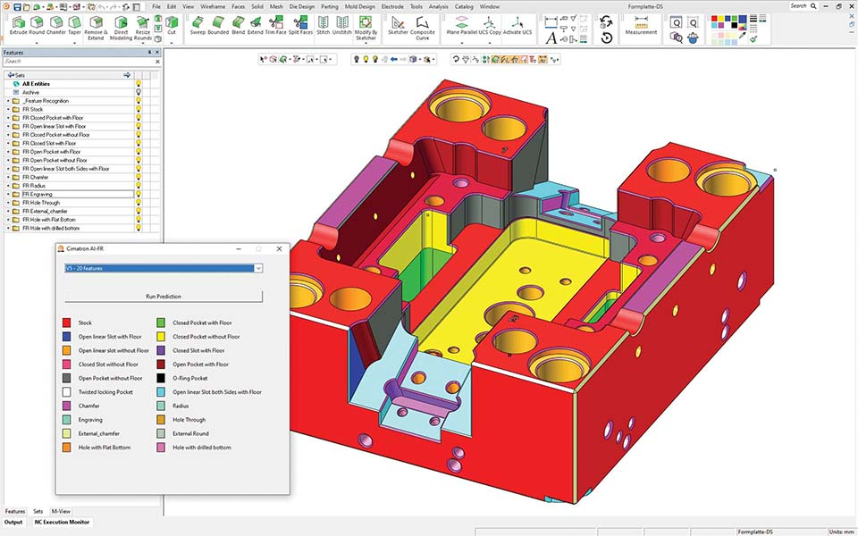
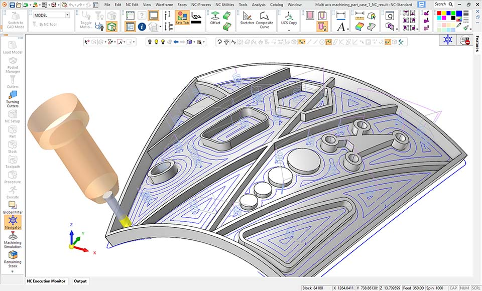
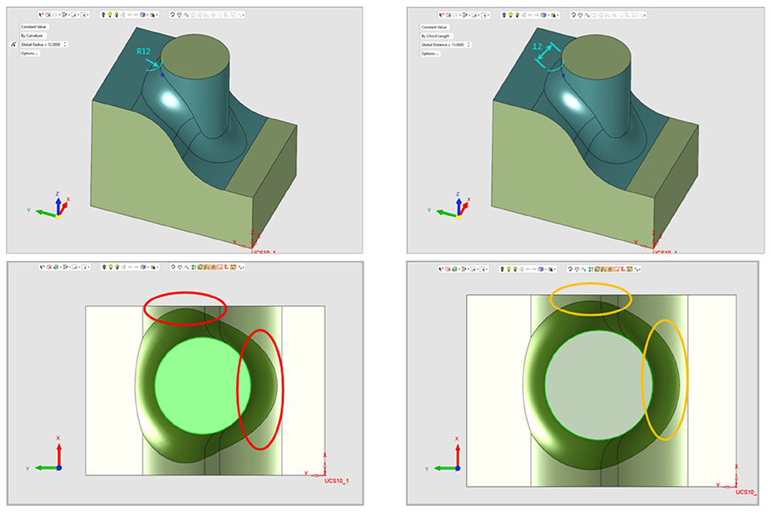

A visão de Amir Lapid torna-se realidade: A Cimatron abre novos caminhos com inovações de IA
Em 2017, o falecido Amir Lapid, CEO da Cimatron Israel, publicou um artigo visionário intitulado "O desenvolvimento do CAD/CAM Juntamente com o avanço da maquinaria de fresagem."
Nele, previu o desenvolvimento futuro tanto do software CAD/CAM como das máquinas CNC, bem como a forma como os avanços em cada um influenciariam o desenvolvimento do outro. Lapid previu um futuro em que o software CAD suportaria todos os tipos de máquinas e eixos e que a combinação da tecnologia CAD com a inteligência artificial (IA) transformaria a indústria de fabrico.
A visão de Lapid tornou-se realidade com a Cimatron, que é atualmente líder no desenvolvimento de inovações de IA para aplicações CAD.

Concretizar a Visão
No seu artigo, Lapid descreveu em pormenor um futuro em que o software CAD suportaria todos os tipos de máquinas e eixos, acabando por conduzir a uma transformação na Maquinação.
Atualmente, o Cimatron 2025 oferece soluções avançadas para todos os tipos de máquinas e eixos, incluindo máquinas multieixos, fusos avançados e tecnologias de processamento inovadoras, integrando ferramentas de IA e melhorias baseadas no feedback direto dos clientes.
Inovações do Cimatron 2025
Integração de ferramentas de IA
A Cimatron integrou totalmente a IA no seu bem estabelecido software CAD/CAM e concentrou-se em dois caminhos principais de integração de IA: informativo e generativo.
"Nós referimo-nos à solução que fornece informações aos utilizadores como 'informativa'. Um exemplo é o Copilot AI", explica Ilan Melamed, Diretor de Desenvolvimento de Produto da Cimatron.
"Agora, os utilizadores não precisam mais navegar pela documentação técnica ou pelos guias do utilizador. Podem simplesmente fazer uma pergunta, seja ela simples ou complexa: 'Como utilizar uma função?'. Quais são as funções das opções existentes necessárias para realizar uma ação específica no sistema? O chatbot responderá", acrescenta Guy Benveniste, diretor do PMO da Cimatron.
No que se refere às soluções generativas, as ferramentas de IA permitem uma interação direta com o modelo geométrico, extraindo informações através da tecnologia de aprendizagem automática baseada em redes neuronais.

Recentemente, a empresa tem estado a trabalhar em duas funções principais:
1. Detecção de Recursos
Esta função identifica elementos geométricos, como bolsas, ranhuras, filetes e diferentes tipos de furos (passantes, cegos, etc.). A IA deteta automaticamente esses elementos e fornece orientações de fabrico com base nas caraterísticas reconhecidas. “Ao contrário dos motores geométricos atualmente utilizados, uma das principais vantagens da IA é a sua capacidade de suportar geometrias novas e complexas sem exigir uma programação específica para cada nova geometria”, explica Melamed.

2) Classificação de Peças
Esta função identifica os conjuntos complexos envolvidos na construção de moldes, tais como ejetores, parafusos, placas e molas. "O motor de IA consegue reconhecer o que vê: ejetores, parafusos, placas, molas e muito mais. Com base neste reconhecimento, o software pode classificar as peças e até sugerir opções de fabrico adicionais, tendo em conta os requisitos do cliente, as capacidades de produção e a maquinaria existente", explica Melamed.

Atualmente, ambas as funções estão em fase piloto e serão disponibilizadas aos clientes em 2025.
Suporte de Máquinas Multi-Eixos e Multi-Fuso
O Cimatron 2025 apresenta novas funções de processamento multi-eixo 5X que suportam cabeças de corte concebidas para segmentos circulares (lente, barril) com controlo de inclinação para eixos de ferramentas e definições de avanço/atraso definidas pelo utilizador. Os novos procedimentos suportam a maquinação de desbaste, o acabamento de pavimentos e paredes, bem como o processamento de material residual.
A camada de maquinação em desbaste (incluindo as camadas internas graduadas) pode ser definida utilizando um desvio da superfície do pavimento, um desvio da superfície do teto e uma morfologia entre as superfícies do teto e do pavimento; a orientação da ferramenta segue a direção normal da superfície do pavimento. O restante processo de cálculo de materiais mantém-se consistente com a versão 2024 e é atualizado continuamente.
As condições de corte inferior suportadas incluem: "não maquinar", "maquinar" e "apenas maquinar". A estratégia de maquinação do material residual após o processamento de desbaste baseia-se na ferramenta de corte utilizada no procedimento anterior (plana, de touro ou de bola).
Melhoria no Processo de Modelação - caraterística redonda
Na versão 2025, os utilizadores podem definir o tamanho de uma característica redonda, utilizando uma corda com o comprimento especificado ao longo do arco para controlar o seu tamanho em vez de introduzir um valor de raio.
Os arredondamentos com um comprimento de corda fixo permanecem tangentes às faces adjacentes e proporcionam uma forma mais uniforme em áreas geométricas específicas, reduzindo a formação de tensões, o que é preferível no design de moldes.
O Legado de Lapid
Amir Lapid foi um pioneiro que previu importantes desenvolvimentos na indústria transformadora. A sua visão e experiência contribuíram para que a Cimatron se tornasse um fornecedor líder de tecnologias para fabricantes de moldes e matrizes, e o seu legado orienta o compromisso contínuo da empresa com o desenvolvimento de soluções inovadoras.
Palavras finais
Em suma, a Cimatron dedica-se a influenciar o futuro da produção, desenvolvendo tecnologias inovadoras e fornecendo aos clientes as soluções mais avançadas. A empresa acredita que a conjugação de conhecimentos humanos e tecnologia de ponta, incluindo a IA, moldará a evolução contínua da produção e garantirá um futuro brilhante.
Lapid não era apenas um gestor; era um visionário. Previu o futuro da produção e liderou a Cimatron com a determinação e a dedicação necessárias para transformar a sua visão em realidade. O seu legado não se esgota na tecnologia avançada que a Cimatron desenvolve, estendendo-se também à cultura de inovação e excelência que promoveu.
A Cimatron segue os passos de Lapid, fornecendo tecnologias avançadas que ajudam os clientes a ter sucesso e acredita que ele ficaria orgulhoso de ver a empresa continuar a abrir novos caminhos.